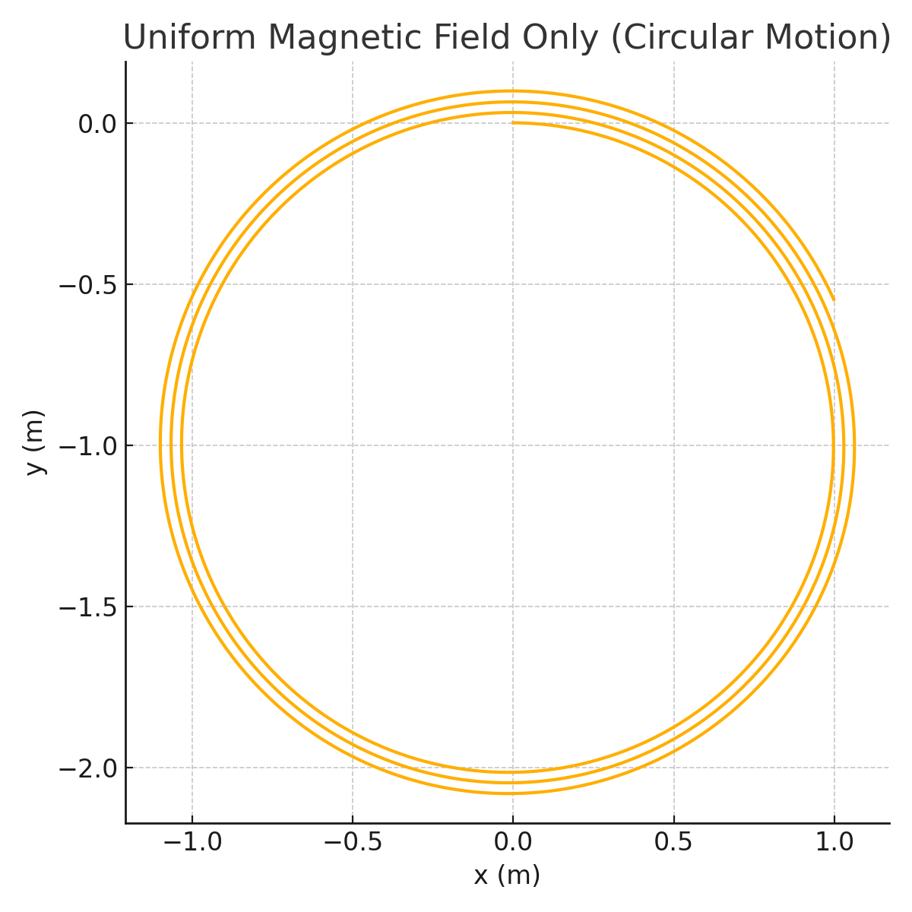
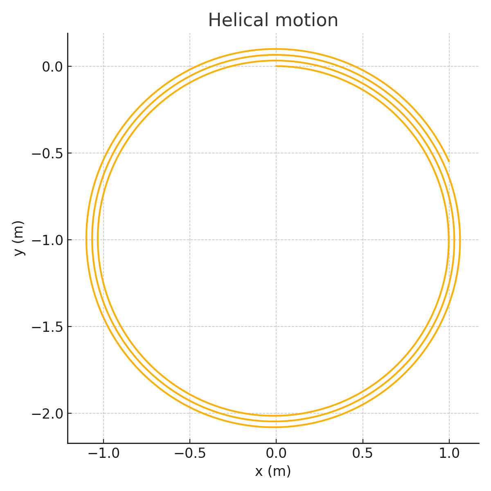
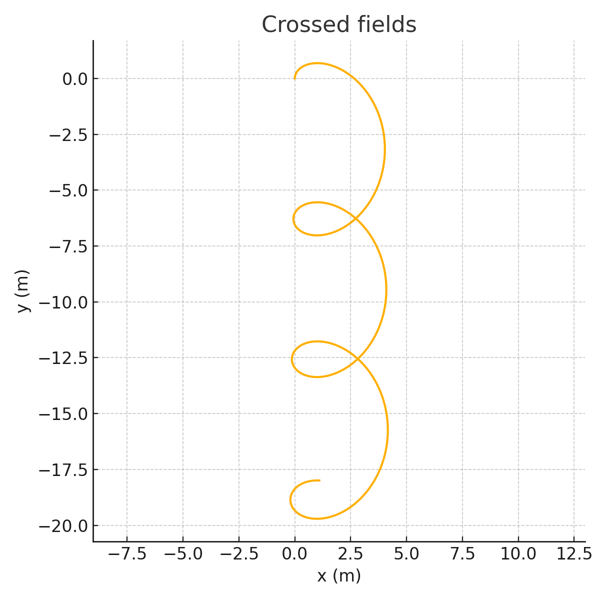
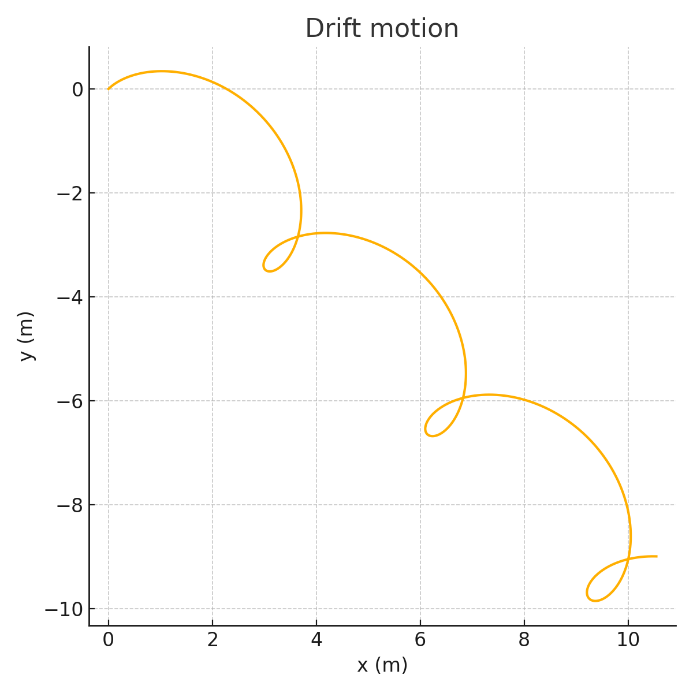
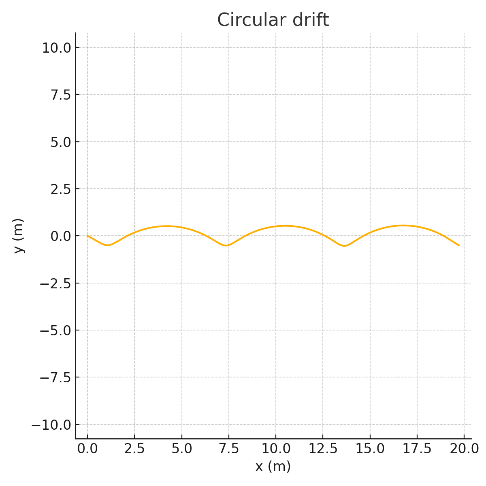

Simulating the Effects of the Lorentz Force
Introduction
The Lorentz force is a cornerstone of classical electromagnetism, describing the total force exerted on a charged particle in the presence of electric and magnetic fields. It is defined as:
Here: - \(\mathbf{F}\) is the total electromagnetic force, - \(q\) is the charge of the particle, - \(\mathbf{E}\) is the electric field, - \(\mathbf{B}\) is the magnetic field, - \(\mathbf{v}\) is the velocity of the particle.
The Lorentz force is not just a theoretical construct — it governs real-world systems in plasma physics, particle accelerators, electric motors, and even the behavior of cosmic rays in space. Unlike gravitational forces, electromagnetic forces can accelerate charged particles in directions not aligned with their velocity, leading to complex and often beautiful trajectories such as spirals, helices, and drifts.
Studying the Lorentz force is also essential for understanding: - Cyclotron and synchrotron motion in accelerator physics, - Confinement of plasma particles in fusion reactors like Tokamaks and Stellarators, - Ion filtering in mass spectrometers, - Drift motion in Earth's magnetosphere and solar winds.
In this report, we numerically simulate how a single charged particle moves under different electric and magnetic field configurations, using Python to visualize the resulting trajectories. These simulations enable an intuitive grasp of concepts such as Larmor radius, cyclotron frequency, and E×B drift velocity.
1. Exploration of Applications
The Lorentz force directly influences a broad range of technologies and natural phenomena. A few prominent applications include:
- Particle Accelerators: Magnetic and electric fields steer and focus high-speed particle beams.
- Plasma Confinement: Devices like Tokamaks use magnetic fields to trap plasma and prevent it from contacting reactor walls.
- Mass Spectrometry: Ions are separated by mass-to-charge ratio using crossed \(E\) and \(B\) fields.
- Electric Motors and Generators: The fundamental working principle is rooted in magnetic forces on moving charges.
- Astrophysical Plasmas: Cosmic rays and solar wind particles spiral along magnetic field lines.
These systems all rely on the ability of electromagnetic fields to redirect, trap, or accelerate charged particles.
2. Simulating Particle Motion
We simulate the motion of a charged particle under Lorentz force by solving Newton’s second law:
We use the Euler method for numerical integration:
- Time domain is discretized as \(t_0, t_1, \dots, t_n\)
- At each time step:
- Compute acceleration \(\mathbf{a}_n\)
- Update velocity \(\mathbf{v}_{n+1} = \mathbf{v}_n + \mathbf{a}_n \cdot dt\)
- Update position \(\mathbf{r}_{n+1} = \mathbf{r}_n + \mathbf{v}_{n+1} \cdot dt\)
Field Configurations Simulated:
- Uniform Magnetic Field Only
- Uniform Magnetic and Electric Fields
- Crossed Electric and Magnetic Fields
- Angled Electric Field Causing Drift
- Opposing E and B With Circular Drift
3. Trajectory Types and Motion Characteristics
| Configuration | Motion | Explanation |
|---|---|---|
| \(\mathbf{E}=0\), \(\mathbf{B} \neq 0\) | Circular | Particle experiences centripetal force due to \(\mathbf{v} \times \mathbf{B}\). |
| \(\mathbf{E} \parallel \mathbf{B}\) | Helical | Particle spirals along magnetic field lines, with linear acceleration. |
| \(\mathbf{E} \perp \mathbf{B}\) | Drift | Circular motion combined with sideways drift \(\mathbf{v}_{\text{drift}} = \frac{\mathbf{E} \times \mathbf{B}}{B^2}\). |
| Angled Fields | Drifting Spiral | Drift motion in diagonal or curved directions. |
| Asymmetric Inputs | Irregular Paths | More chaotic or elliptical spirals due to imbalanced inputs. |
4. Simulation Results and Explanations
Each simulation was performed using:
- \(q = 1\,\mathrm{C}\) (unit charge)
- \(m = 1\,\mathrm{kg}\) (unit mass)
- \(\Delta t = 0.01\,\mathrm{s}\)
- Simulation time \(T = 20\,\mathrm{s}\)
4.1 Uniform Magnetic Field — Circular Orbit
Only magnetic field in the \(z\) direction: \(\mathbf{B} = (0, 0, 1)\)
Initial velocity is orthogonal: \(\mathbf{v}_0 = (1, 0, 0)\)
Result: classic circular trajectory in \(xy\)-plane.

4.2 Helical Motion — \(E\) and \(B\) Fields Parallel
\(\mathbf{E} = (0, 0, 0.5)\), \(\mathbf{B} = (0, 0, 1)\)
Initial velocity has \(z\) component: \(\mathbf{v}_0 = (1, 0, 0.5)\)
Result: Particle spirals upward, forming a helix.

4.3 Crossed Fields — Classical Drift
\(\mathbf{E} = (1, 0, 0)\), \(\mathbf{B} = (0, 0, 1)\)
Initial velocity is orthogonal: \(\mathbf{v}_0 = (0, 1, 0)\)
Result: Drift path perpendicular to both fields.

4.4 Angled Fields Causing Diagonal Drift
\(\mathbf{E} = (0.5, 0.5, 0)\), \(\mathbf{B} = (0, 0, 1)\)
Initial velocity is also diagonal.
Result: Spiral motion drifting in diagonal direction.

4.5 Curved Drift With Imbalance
\(\mathbf{E} = (0, 1, 0)\), \(\mathbf{B} = (0, 0, 1)\)
Initial velocity not aligned with field.
Result: Circular arcs with drift — used in beam control.

5. Parameter Exploration
We observe how changes in: - Charge or mass: affects radius and frequency (\(r_L = mv/qB\)) - Velocity direction: modifies spiral pitch - Field strength: \(B \uparrow\) → tighter spiral; \(E \uparrow\) → stronger drift
Such insights are useful in optimizing real devices (e.g. plasma traps, filters).
6. Further Extensions
- Add Runge-Kutta 4th order method for more accurate paths.
- Visualize in 3D using
mpl_toolkits.mplot3dto explore full helices. - Add non-uniform fields to simulate Earth’s magnetosphere or magnetic mirrors.
- Combine multiple particles for plasma-scale behavior.